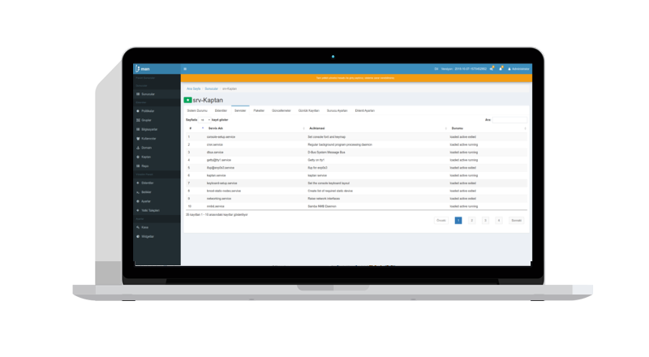
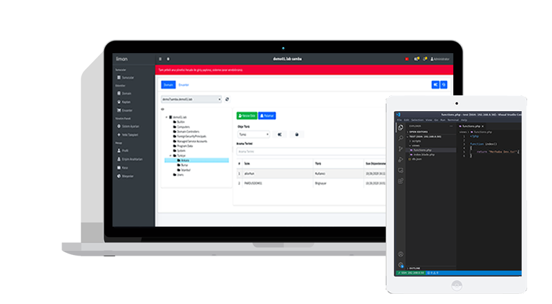
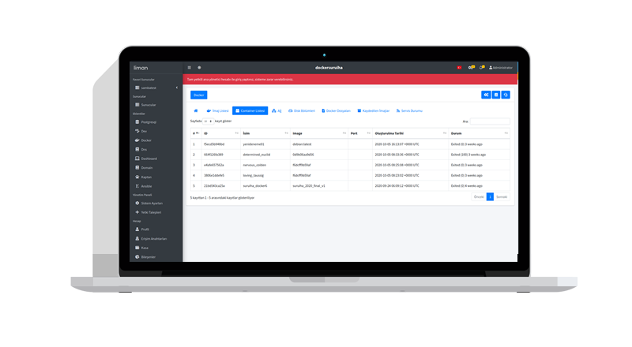

Sunucularınızı Yönetin
İster Windows, İster GNU/Linux temellİ sunucularınızı uzaktan web arayüzü üzerİnden yönetmeye başlayın.

GENİŞLETİLEBİLİR EKLENTİ YAPISI
KOLAYLIKLA GENİŞLETİLEBİLİR EKLENTİ YAPISI İLE BİRLİKTE SUNUCULAR ÜZERİNDE FARKLI ARAYÜZ VE FONKSİYONELLİK EKLENEBİLMEKTEDİR.

ROL YÖNETİMİ
KULLANICI VE GRUPLARINIZI, BELİRLEDİĞİNİZ SUNUCULARA VE EKLENTİLER İÇERİĞİNDEKİ FONKSİYONLARA GÖRE ÇEŞİTLİ YETKİLER VERİP YÖNETEBİLİRSİNİZ.

KURUMSAL EKLENTİLER
- DOMAİN POLİTİKALARI
- Paket Deposu
- Envanter
- DNS
- PostgreSQL

HAVELSAN A.Ş. tarafından desteklenmektedir.
Template by Bootstrapious. Ported to Hugo by DevCows.